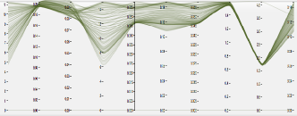

Project Based Data Storage and Management
Data values stored in the VOEIS system are housed in individual databases called “Projects.” Each Project has unique user permissions and may contain a unique set of controlled vocabularies (e.g. variables names, QAQC levels, etc.). Separating data into many different databases in this way allows each user to tailor VOEIS to better suite his or her particular use-case needs.Highly-Granular User Access Controls
A primary concern of researchers and data mangers is data control. VOEIS provides highly granular user access controls that allow PIs to grant varying degrees of read and/or write permissions to any registered VOEIS user.Simple Data Upload Template Creation
Uploading data to a database can be a complex and/or time intensive process that frequently presents a significant barrier to entry for would-be database users. VOEIS simplifies the data upload process by allowing users to create data templates that can be reused to upload data files that exhibit the same format. This can significantly reduce the amount of time a user spends uploading data that was collected by a datalogger or recorded in an electronic data entry sheet.QAQC Tools
Data must undergo quality assurance and quality control procedures before users can use it confidently for analysis or site characterization. Many data archiving systems require users to complete QAQC procedures prior to data upload. This separate step forces users to utilize separate pieces of software for data editing and storage. VOEIS provides a more parsimonious solution. VOEIS users with the appropriate permissions are able to query data and edit individual values along with their associated metadata. VOEIS also provides batch-edit capabilities for users comfortable with scripting in R.Provenance Tracking
Provenance information is recorded for all objects in the VOEIS data model. Any changes made to the data model (e.g. data upload, variable creation) are identified with a timestamp and the user associated with the change. This provides data managers with a tool for tracking the activities of lab members.Data Versioning and Rollback
VOEIS is built with state-of-the-art data versioning and rollback features. The software stores a full record of changes made to each object in the data model and the user interfaces allow data managers to view these changes as a series of versions. Any version can be selected as the current version, allowing users to rollback to previous versions if a faulty edit is identified.

Complex Data Visualization
In addition to plotting queried data as simple line graphs, users may also view several data series that represent multiple variables collected at one or more locations on a parallel coordinates plot. This visualization tool provides researchers with a means for exploring spatio-temporal relationships in their data without the need to first export it to another software program like Excel.